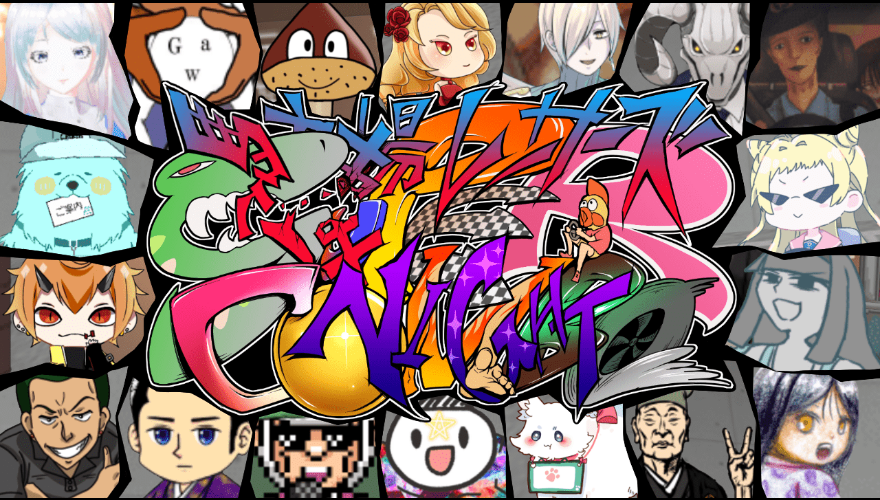

ティラノゲームフェス２０２４
バーチャル会場もありのオンラインゲームイベント『 ティラノゲームフェス2024 』。

《 企画・シナリオ・キャラ背景・BGMSEボイス・動画・スクリプト・プログラム・制作：チャビノスケ 》
制作のツールをお借りし、ツール以外 全部を制作したゲームなので とても感慨深い。
時代劇風の 異世界が舞台。和風音楽と サンバのリズムで レッツ！シャッフル！
エンドロールが ど真ん中にある、コメディ＆ドラマ ノベルゲーム。
ゲーム好きで 時代劇観てる人、知っている人なんて いないだろうから
このゲームは需要無い！ だけど それでもいい！ 作る！！
・・・という気持ちで頑張って制作。
キャラや 小物などなど、わかる人にはわかる パロディ満載。
細かい変化も たくさんあるので、見つけて もらえたら嬉しい。
ぜひ 将軍目線で最後に何が起こるのかを その目で確かめて もらえたら本望だ。
エンドは１つ。オマケは ４つ。
クリア後も ぜひ楽しんで もらえたら嬉しい。
▲ プレイ・詳細はコチラ ▲
こちらの スーパーコラボ作品に 参加させていただきました！！
この画面…… 圧倒的……ッ！！
ティラノスクリプト関連ツール『 Raptex Studio 3D World Builder 』で、制作された
障害物レースゲーム…！！
ノベルゲームと レースゲームの融合が ここに爆誕…！！
ノベルゲームコレクション他でも ご活躍されている ゲーム制作者様、
総勢１８名 が大集結…！！
そんなビッグネームの中に しれっと 混ざった将軍だが… 参加できて 本当に嬉しい！！
しかも、遊べるキャラは ２０ 以上…！！ エンディングも豪華…！！
ノベルゲームコレクションで よく遊ばれる方には 特に なじみ深いと思う。
様々な世界が楽しめる この宇宙……
言葉では伝わりにくいので ぜひプレイしてみてほしい！
▲ プレイ・詳細はコチラ ▲
オンライン：2024/9月～終了
▲ フェスのページはこちら ▲
© 2024 chabinosuke_
２作目『 将軍捕物帳 』で参加 時代劇と サンバの ゲーム。 音出しプレイ推奨！
《 企画・シナリオ・キャラ背景・BGMSEボイス・動画・スクリプト・プログラム・制作：チャビノスケ 》
制作のツールをお借りし、ツール以外 全部を制作したゲームなので とても感慨深い。
時代劇風の 異世界が舞台。和風音楽と サンバのリズムで レッツ！シャッフル！
エンドロールが ど真ん中にある、コメディ＆ドラマ ノベルゲーム。
ゲーム好きで 時代劇観てる人、知っている人なんて いないだろうから
このゲームは需要無い！ だけど それでもいい！ 作る！！
・・・という気持ちで頑張って制作。
キャラや 小物などなど、わかる人にはわかる パロディ満載。
細かい変化も たくさんあるので、見つけて もらえたら嬉しい。
ぜひ 将軍目線で最後に何が起こるのかを その目で確かめて もらえたら本望だ。
エンドは１つ。オマケは ４つ。
クリア後も ぜひ楽しんで もらえたら嬉しい。
▲ プレイ・詳細はコチラ ▲
そして もう１つ『 駐車場レーサーズNIGHT スーパーコンボ 』……！！
ピュアシンプル亭 様
製作
音出しプレイ推奨！
✬ 過去に制作されたゲームも めちゃおもしろいので プレイお勧めです！ ✬

この画面…… 圧倒的……ッ！！
ティラノスクリプト関連ツール『 Raptex Studio 3D World Builder 』で、制作された
障害物レースゲーム…！！
ノベルゲームと レースゲームの融合が ここに爆誕…！！
ノベルゲームコレクション他でも ご活躍されている ゲーム制作者様、
総勢１８名 が大集結…！！
そんなビッグネームの中に しれっと 混ざった将軍だが… 参加できて 本当に嬉しい！！
しかも、遊べるキャラは ２０ 以上…！！ エンディングも豪華…！！
ノベルゲームコレクションで よく遊ばれる方には 特に なじみ深いと思う。
様々な世界が楽しめる この宇宙……
言葉では伝わりにくいので ぜひプレイしてみてほしい！
▲ プレイ・詳細はコチラ ▲
オンライン：2024/9月～終了
▲ フェスのページはこちら ▲
© 2024 chabinosuke_